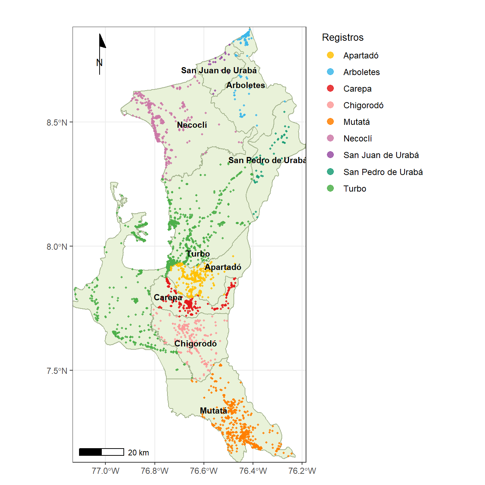
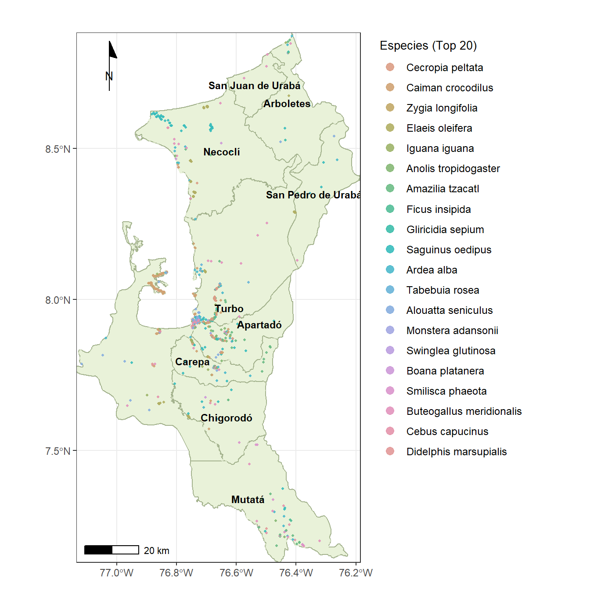
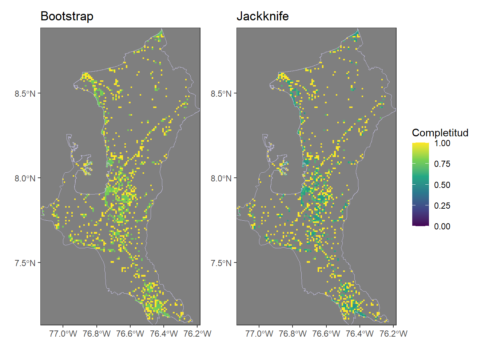
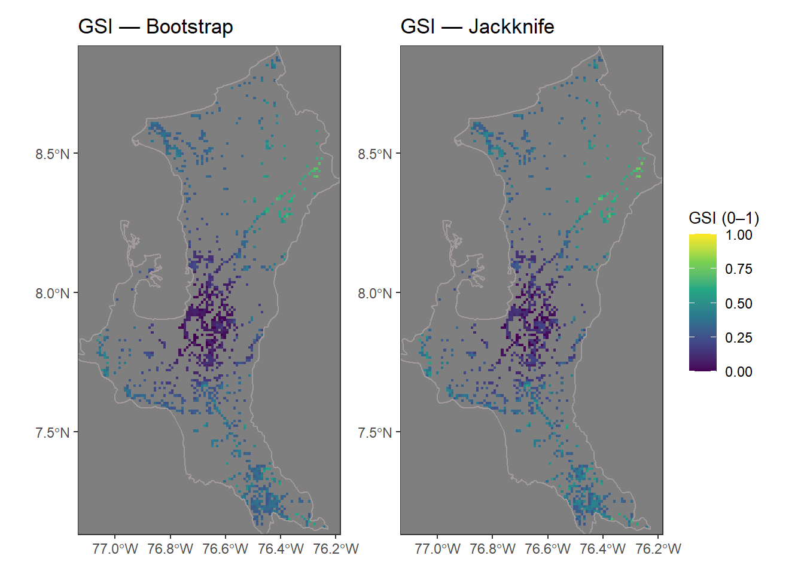
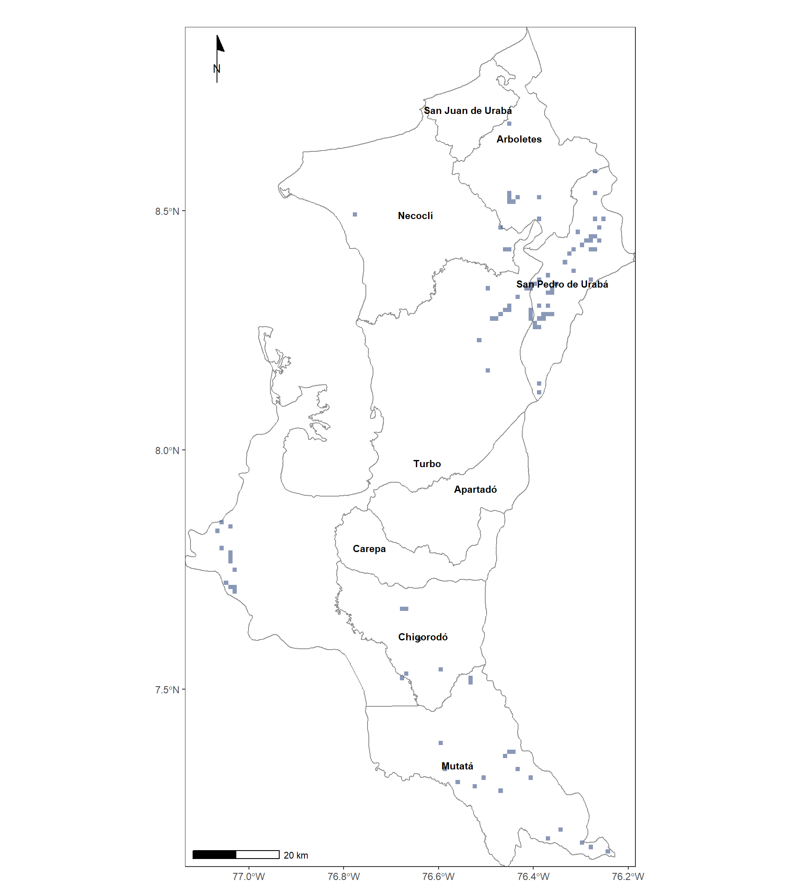

Requerimiento del par evaluador
5.) Incluir mapas para presentar el número de especies y registros representados en la base de datos, más allá de concentrarse en diagrama de barras.
R./ Mapas 1 y 2 de este reporte. Completar con una tabla que relaciones registros y especies por municipios, porque el mapa 2 solo relaciona a las 20 especies más abundantes, para no saturarlo.
6.) A partir de los registros proponer algunos modelos de interpolación de la riqueza, esto si se quiere indicar cuál es la riqueza potencial del área de estudio (Ejemplo: http://www.scielo.org.co/scielo.php?script=sci_arttext&pid=S0366-52322021000200247; https://github.com/PEM-Humboldt/gsi_analysis/blob/main/3_Complementarity%20dimesion.R).
R./Interpólación de la riqueza ya se hizo: Propuesta de Chao et al. en 4 pasos (enlace).
R./ La referencia del GSI se enfoca es en los vacíos de información (parches) a nivel espacial (entre municipios), es el enfoque de este reporte.
7.) Las conclusiones se deben orientar a la disponibilidad de datos, más que a la riqueza de especies, ya que los muestreos no son homogeneos.
R./ Tener en cuenta el resultado del paso 4 de este reporte, en especial la tabla (Tabla 1), que relaciona cantidad de área por muestrear en cada municipio, como resultado del índice GSI.
Área de Estudio

Top 20 de las especies con más registros

Indice de selección de parches - GSI
Este ínice es pruesto por el Instituto von Humboldt (enlace), basado en algunos referentes como García Márquez et al. (2012) y Aguiar et al. (2020). El GSI se enfoca en la idenificación de zonas con información faltante de registros de especies (parches), generando propuestas de implementación de mayores esfuerzos de muestreo, incorporando el análisis de densidad de registros, capas climáticas (ambientales). El GSI muestra valores entre 0 y 1, siendo los valores iguales o cercanos a 1, los que exigen mayor representación o esfuerzos de muestreo.
El siguiente procedimiento, sigue la propuesta del Humboldt, basado en 4 pasos:
1_Record_dimension
2_Ambiental_dimension
3_Complementarity dimension
4_GSI
Paso 1. Dimensión de registros.
Se cosntruirá una superficie continua de intensidad de muestreo (densidad de registros) a 1 km para el Urabá antioqueño, usando los registros de especies o las ocurrencias georreferenciadas. Luego, reescalarla a [0,1] y derivar una máscara de áreas muy submuestreadas (percentil 10). Esto es la “capa de esfuerzo” que después se cruza con las otras dimensiones del GSI en el resto de pasos.
Los objtivos de este paso se orientan en (1) Cuantificar y mapear dónde se ha muestreado más/menos dentro de Urabá para no confundir vacíos de datos con ausencia de registros. (2) Identificar vacíos de información (p10) que ayuden a planear salidas y que, más adelante, ponderen la combinación de dimensiones del GSI.
Base de datos utilizada
| ID | lat | lon | kingdom | phylum | Grupo | class1 | class | order_ | family | genus | species | stateProvi | verbatimSc | Dpto | Municipio |
|---|---|---|---|---|---|---|---|---|---|---|---|---|---|---|---|
| 1 | 7.666700 | -76.67920 | Animalia | Chordata | A | Amphibia | Amphibia | Anura | Leptodactylidae | Leptodactylus | Leptodactylus savagei | Antioquia | Leptodactylus savagei | ANTIOQUIA | Chigorodó |
| 2 | 7.824057 | -77.12531 | Animalia | Chordata | A | Aves | Aves | Passeriformes | Thamnophilidae | Thamnophilus | Thamnophilus atrinucha | Antioquia | Thamnophilus atrinucha | ANTIOQUIA | Turbo |
| 3 | 7.805023 | -77.12233 | Animalia | Chordata | A | Aves | Aves | Accipitriformes | Cathartidae | Cathartes | Cathartes burrovianus | Antioquia | Cathartes burrovianus | ANTIOQUIA | Turbo |
| 4 | 7.805023 | -77.12233 | Animalia | Chordata | A | Aves | Aves | Piciformes | Picidae | Melanerpes | Melanerpes rubricapillus | Antioquia | Melanerpes rubricapillus | ANTIOQUIA | Turbo |
| 5 | 7.805023 | -77.12233 | Animalia | Chordata | A | Aves | Aves | Suliformes | Phalacrocoracidae | Phalacrocorax | Phalacrocorax brasilianus | Antioquia | Nannopterum brasilianum | ANTIOQUIA | Turbo |
| 6 | 7.805023 | -77.12233 | Animalia | Chordata | A | Aves | Aves | Passeriformes | Thraupidae | Ramphocelus | Ramphocelus dimidiatus | Antioquia | Ramphocelus dimidiatus | ANTIOQUIA | Turbo |
Registros en Urabá: 6887 png
2 
En el mapa se logra visualizar un tipo de hotspot central (azul oscuro) que coincide con el eje Turbo–Apartadó–Carepa–Chigorodó, donde se concentra el mayor número de registros o de esfuerzo de muestreo. Hacia los bordes, del nororiente (Arboletes / San Pedro) y del sur (Mutatá) la densidad cae gradualmente (tonos claros), indicando menor esfuerzo o submuestreo.
En este sentido, donde la densidad es alta (hotspot) el índice GSI será bajo (parche o brecha menor) en las periferias con densidad baja y será alto (brecha mayor, con vacíos de información). Esto se complementará con el resto de pasos del GSI.
Paso 2. Dimensión Ambiental
En este paso se evalúa qué tan bien está representado el espacio ambiental de Urabá por los registros de especies del estudio. Para ello se compara a las condiciones ambientales alrededor de las presencias vs. un conjunto de puntos de fondo (pseudo-ausencias) muestreados dentro del AOI pero lejos de las presencias. El AOI (área de interes / área de estudio) es un procedimiento cartográfico que acota o ajusta a toda el área de estudio para el cálculo del GSI a lo largo de los cuatro pasos. Para este caso, el AOI une a los 9 municipios. El resultado es un raster continuo con valores 0–1:
Valores altos = ambientes bien cubiertos por los datos.
Valores bajos = ambientes poco representados (potenciales brechas).
Variables ambientales: WorldClim BIO (subconjunto sin alta colinealidad), elevación y pendiente, recortadas al AOI.
Modelado: GLM binomial (sp∈{0,1}) con selección stepAIC. Se evalúa con una partición tipo hold-out (AUC).
El objetivo consiste en construir una capa de representatividad ambiental robusta y alineada al grid del Paso 1, que luego se combinará con las otras dimensiones del GSI. Esta capa ayuda a identificar ambientes –no solo lugares – que requieren mayor esfuerzo de muestreo.
Registros en Urabá: 6887 png
2 
En el mapa, los colores azules indican valores altos (ambientes bien representados por los datos o registros) y los amarillos valores bajos (ambientes poco representados o con mayores brechas).
Se observan valores altos (azules) en gran parte del occidente y sur del Urabá, lo que indica que esas combinaciones ambientales están bien cubiertas por los registros (coincide con la franja central y sur ampliamente muestreada del Paso 1).
Se distinguen valores bajos (claros) en el nororiente (hacia Arboletes / San Pedro de Urabá) y algunos sectores costeros y orientales. Esas zonas combinan condiciones climáticas/altitudinales menos representadas en la base, por lo que aportan brecha ambiental.
El reescalado por cuantiles evita que la capa quede “plana” y facilita ubicar parches claros que, más adelante, elevarán el GSI (En el índice, ambientes bien representados tienden a reducir la brecha o parche; ambientes poco representados la aumentan).
Calidad del ajuste - AUC: Se puede revisar el AUC impreso por el script. Como guía, AUC estándar, donde > 0.7 = aceptable, > 0.8 = bueno. AUC define que tam bien el modelo separa a las presencias de las ausencias, para todos los umbrales posibles del score.
Paso 3. Dimensión complementaria
En este tercer paso, se utilizan dos estimadores no paramétricos de riqueza de especies (Bootstrap y Jackknife 1), para evaluar qué tan completo es el inventario. El resultado es un raster por método con valores entre [0–1]: cercano a 1 = alta completitud (poca brecha); cercano a 0 = baja completitud (mayor brecha potencial).
El objetivo de este paso, consiste en detectar celdas donde, dado lo observado, faltan especies por registrar (baja completitud) y, por tanto, tienen mayor potencial de aportar nuevos registros si se prioriza el esfuerzo de muestreo en campo.

Los mapas muestran valores altos de completitud (amarillos) en el corredor central (p. ej., entorno Apartadó–Carepa–Chigorodó–Turbo), donde hay más especies y repeticiones por celda.
Hacia bordes y sectores periféricos (nororiente: Arboletes/San Pedro de Urabá; extremo sur en Mutatá; franjas costeras) aparecen valores medios y algunos bajos (más verde en Jackknife), indicando mayor brecha potencial allí.
Bootstrap vs. Jackknife: los patrones espaciales son muy similares, pero Jackknife es más conservador (tiende a dar completitudes más bajas, rango más amplio; en su salida llega ~0.58), por lo que realza mejor las áreas con brecha.
Interpretación visual (paleta YlGnBu):
Amarillo (≈1): inventario local bastante completo; menor ganancia esperada por más muestreo.
Verde–azul (≈0.6–0.8): faltan especies; celdas candidatas para reforzar.
Gris: sin datos en la celda (la dimensión de densidad ya las prioriza).
Paso 4. Índice de parches - GSI
En este cuarto y últomo paso, se integran las tres dimensiones construidas en los pasos 1–3 —densidad de registros, ambiente y complementariedad — para obtener dos superficies finales del índice GSI: una basada en el estimador \(Bootstrap\) y otra en \(Jackknife\). Cada capa se reescala, se alinea a la grilla de 1 km y luego se combina como:
\[GSI=\frac{3 - \text{DENSIDAD} - \text{AMBIENTE} - \text{COMPLEMENTARIEDAD}}{3}\] De modo que valores altos indican mayor brecha (prioridad de muestreo). Finalmente se generan: \(GeoTIFF\) (float32) y máscaras Top 10 % (priorización) con su área (km²) y un mapa de consenso (solapamiento \(BOOT∩JACK\) = Mapa Top 10%).
En este sentido, se generan mapas operativos que identifiquen dónde muestrear primero en el Urabá, priorizando las celdas con mayor brecha simultánea en: (i) baja densidad de datos, (ii) ambientes poco representados y (iii) composición no cubierta, y entregando polígonos/áreas cuantificables para la planificación de salidas de campo paramuestrear.
Área top10% — BOOT: 114 km2 | JACK: 114 km2Solapamiento BOOT∩JACK (top10%): 99.8 km²[1] 0png
2 png
2 Listo:
- E:/Artículos/Lenin3/GSI_Index_Urabá/4_GSI/GSI_BOOT_Uraba_mpios.png
- E:/Artículos/Lenin3/GSI_Index_Urabá/4_GSI/GSI_JACK_Uraba_mpios.png png
2 png
2 png
2 Tabulación de las áreas de parches del GSI
La tabla es la cuantificación de los parches o zonas por muestrear, definidos por el GSI y que fueron mapeados.
Tabla 1: ?(caption)
| ID | zid | area_km2 | % | Localidad |
|---|---|---|---|---|
| 1 | 8 | 36.9 | 36.3 | San Pedro de Urabá |
| 2 | 9 | 28.9 | 28.4 | Turbo |
| 3 | 5 | 17.0 | 16.7 | Mutatá |
| 4 | 2 | 11.0 | 10.8 | Arboletes |
| 5 | 6 | 4.0 | 3.9 | Necoclí |
| 6 | 4 | 3.0 | 2.9 | Chigorodó |
| 7 | 7 | 1.0 | 1.0 | San Juan de Urabá |
| 8 | 1 | 0.0 | 0.0 | Apartadó |
| 9 | 3 | 0.0 | 0.0 | Carepa |
Mapas con los estimadores calculados - Boot y Jack

Patrón espacial (en BOOT y JACK):
GSI bajo (colores claros en los mapas) en el corredor central más muestreado (eje Apartadó–Carepa–Chigorodó y alrededores).
GSI medio–alto en bordes y zonas menos cubiertas:
Nororiente (San Pedro de Urabá / Arboletes): parches concentrados y valores altos.
Costa (Necoclí y franjas litorales) con núcleos dispersos.
Sur (Mutatá y cola meridional) con clústeres medianos.
Concordancia de estimadores: BOOT y JACK muestran estructuras muy similares; JACK tiende a realzar picos (ligeramente mayor máximo: ~0.79 vs ~0.73), lo que respalda usar el mapa de consenso que se muestra a continuación.
- Dónde empezar (aumentar esfuerzos de muestreos de inventarios):
Si se busca máxima robustez, comenzar por el solapamiento BOOT∩JACK (101.8 km²).
Si se requiere masa crítica por sitio, usar el inventario de parches (el mayor ≈ 11 km²) para seleccionar 4–6 clústeres y asignar esfuerzo por accesibilidad.
Por municipio (consenso): mayor área prioritaria en San Pedro de Urabá (~36.9 km²), Turbo (~28.9 km²) y Mutatá (~17 km²); aportes menores en Arboletes y Necoclí; casi nulo en Apartadó/Carepa (coincide con buena cobertura previa).
Contexto ecológico: el índice GSI está captando una brecha de información, sin “riqueza” per se, a zonas con pocos datos y ambientes/composición poco representados aparecen con GSI alto, lo que optimiza nuevas campañas para cerrar vacíos de inventarios.
Recomendación para el manuscrito: mostrar (i) los mapas GSI_BOOT y GSI_JACK anteriores y (ii) el mapa de concenso que sigue a continuación con Top 10 % de cada uno (JACK y BOOT) más el solapamiento.
Mapa de concenso por solapamiento de BOOT y JACK.
Patrón espacial: los parches TOP 10 % se concentran en los bordes menos muestreados:
nororiente (Arboletes–San Pedro de Urabá), tramos de la franja costera y el extremo sur (Mutatá).
En el eje central Turbo–Apartadó–Carepa–Chigorodó aparecen pocos parches → esa zona ya tiene buena cobertura (bajo GSI).BOOT vs JACK: coinciden mucho; JACK suele marcar picos muy puntuales y BOOT incluye celdas adyacentes en algunos sectores. Aun así, ambos suman ~114 km² cada uno en top 10 %.
